Securely analyze dbGaP-protected data in the cloud
The National Institutes of Health (NIH) maintains security requirements and recommmendations for analyzing controlled-access genomic data, including dbGaP-protected data. With some setup beyond installation, Rail-RNA can analyze dbGaP-protected RNA-seq data on Amazon Elastic MapReduce in a way that complies with these policies. Amazon Web Services (AWS) has also released complementary documents on securing its resources, including some security best practices and the whitepaper Architecting for Genomic Data Security and Compliance in the Cloud.
Rail-RNA ensures encryption of all data it handles at rest---on the Elastic MapReduce cluster and on S3---as well as in transit. Rail-RNA also ensures that the Elastic MapReduce cluster is sufficiently isolated from the internet by launching all job flows into a Virtual Private Cloud (VPC) augmented by several security features. (See this section for more information.) The steps below create a new AWS IAM account especially for analyzing dbGaP-protected data. To perform these steps, both user and AWS site administrator should be available. (For many investigators, user and administrator will be the same person.) It is recommended that they are physically together to minimize passing of credentials. The user should already have Rail-RNA installed on their local machine, including the AWS Command Line Interface (CLI). The user should also have requested access to some dbGaP-protected sample on the Sequence Read Archive (SRA) and received a key file with an ngc extension.
Analysis of data on CGHub is currently unsupported, but we hope to add support in the near future.
Set up an administrator account (administrator)
These steps should be performed if the site administrator is new to AWS.
- Navigate to http://aws.amazon.com/free in your web browser.
- Click Create a free account.
- Check the I am a new user box and and continue to follow the instructions to create your new account. You'll enter, for example, contact and payment information. Note that the Basic level of service is sufficient for using Rail-RNA.
- Make a note of your account number.
- Log into the [AWS console] using the new account's email address and password.
- Click on the arrow next to your user name in the gray banner at the top of the page.
- Select My Account, and the Account Id will be displayed at the top of the page.
- Secure the account
- Log into the AWS console using the new account's email address and password.
- Open the Identity and Access Management page.
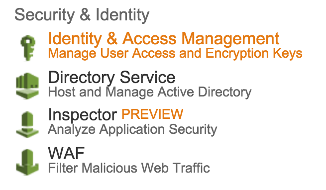
- Under Security Status, click Activate MFA on your root account, then click Manage MFA, and follow the instructions to enable multi-factor authentication. We use a virtual MFA device (smartphone) with Google Authenticator.
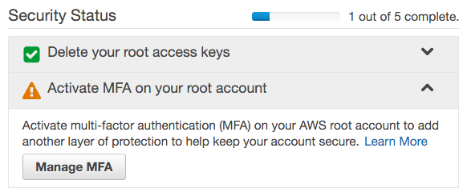
- Under Apply an IAM password policy, click Manage Password Policy.
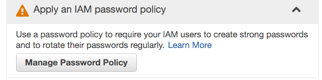Configure the password policy according to the requirements mentioned in the NIH Security Best Practices for Controlled-Access Data Subject to the NIH Genomic Data Sharing (GDS) Policy. This usually entails the following, but please note that your institution may impose more stringent requirements:
- Requiring a minimum password length of 12
- Requiring at least one uppercase letter
- Requiring at least one lowercase letter
- Requiring at least one number
- Requiring at least one non-alphanumeric character
- Enable password expiration after 120 days
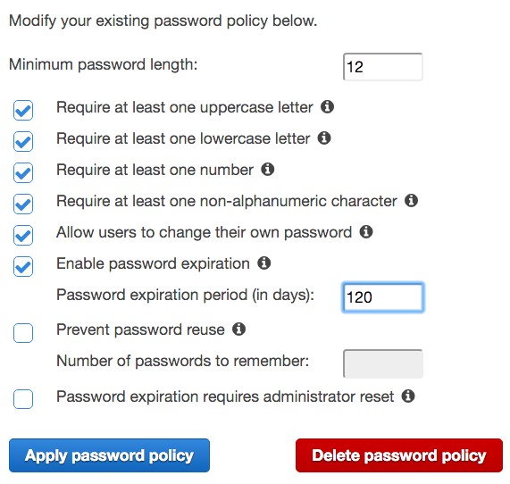
- Click Apply password policy.
Set up a new IAM user (administrator & user)
During this process, it is best for the account administrator to sit with the user to minimize passing credentials.
-
Administrator: create new IAM user.
- From the new user's computer, log into the AWS Console and select Identity and Access Management.
- Click Users on the left pane, then Create New Users on the right pane.
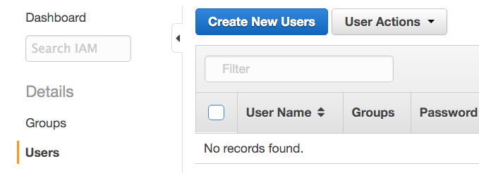
- Enter the new user's username. We call the new user dbgapuser in the screenshot. Check the Generate an access key for each user checkbox, and click Create.
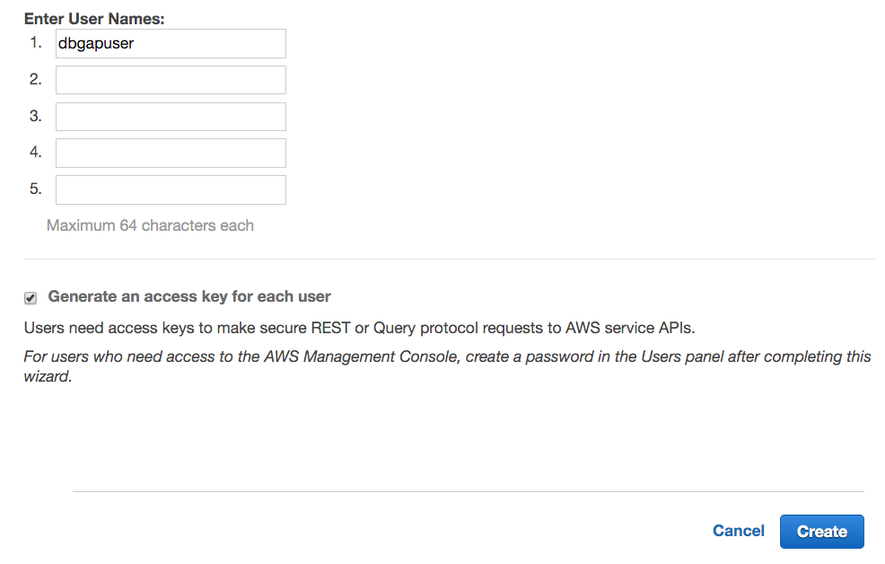
- Click Download Credentials. These credentials (credentials.csv) include the AWS Access Key ID and AWS Secret Access Key. It is recommended that the file containing the credentials be made readable only by the user immediately. The credentials should never be shared, intentionally or inadvertently, with anyone else.
-
User: register credentials with the AWS CLI by entering
aws configure --profile dbgapat a terminal prompt on the user's computer. Enter the AWS Access Key ID, AWS Secret Access Key, and a default region as prompted. We recommend using the
us-east-1because its connection to dbGaP-protected data on SRA appears to be fastest. A default output format need not be specified. Now the new user can issue AWS API calls via the AWS CLI. It is recommended that credentials file that was just downloaded is now deleted. -
Administrator: Set user's password.
- Return to the AWS Console, again click Identity and Access Management, again click Users on the left sidebar, and select the new user. Under User Actions, click Manage Password.
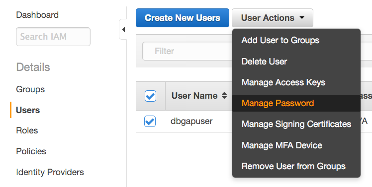
- Select Assign an auto-generated password, check the Require user to create a new password at next sign-in box, and click Apply.
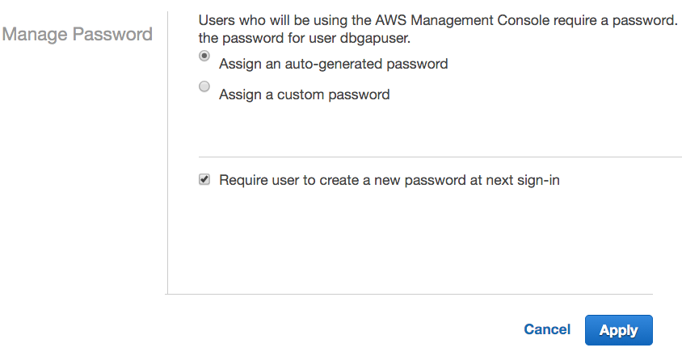
- Click Download Credentials. The new credentials file credentials (2).csv contains the username, the auto-generated password, and the URL for the account-specific login page.
- Return to the AWS Console, again click Identity and Access Management, again click Users on the left sidebar, and select the new user. Under User Actions, click Manage Password.
-
User: navigate to the login page URL from credentials (2).csv, log in, and change the password as prompted.
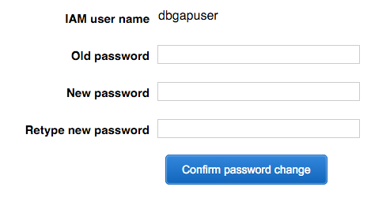
Create a secure CloudFormation stack (administrator)
CloudFormation facilitates creation and management of a group of related AWS resources. Rail-RNA is bundled with a CloudFormation template for creating a Virtual Private Cloud (VPC) with a single public subnet. A Rail-RNA job flow that analyzes dbGaP data is launched into this subnet. The VPC is supplemented by several security features, including
- a VPC endpoint for S3, which ensures that the connection between the Elastic MapReduce cluster and S3 is private.
- security groups that block all inbound traffic to the cluster from the internet except from the Elastic MapReduce webservice.
- the creation of a secure bucket on S3 into which Rail-RNA should write all its output when operating on dbGaP-protected data. The bucket has an attached policy barring uploads that do not have server-side encryption (AES256) turned on.
- CloudTrail logs recording AWS API calls. These are written to the secure bucket.
The user will find the CloudFormation template at $RAILDOTBIO/cloudformation/dbgap.template and can send it to the administrator, but it is recommended that the administrator grab the latest version of the template here. Implement it by following these steps. (If the administrator already has CloudTrail turned on, they may not work, causing a rollback. An administrator satisfied with their CloudTrail configuration may instead want to use this alternative CloudFormation template, which creates the VPC but does not attempt to set up CloudTrail.)
- Click CloudFormation in the AWS console, making sure the region in the upper-right corner of the screen is the same as the user's default region (typically
us-east-1, i.e., N. Virginia).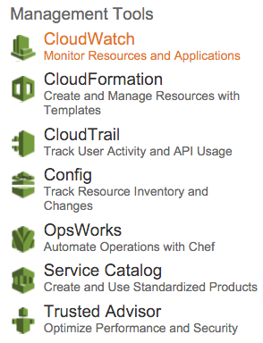 - Click Create Stack.
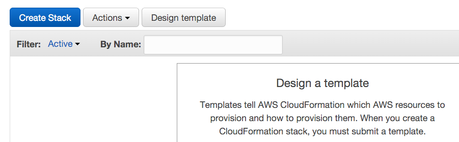
- Under Choose a template, opt to upload
dbgap.templateto Amazon S3, and click Next.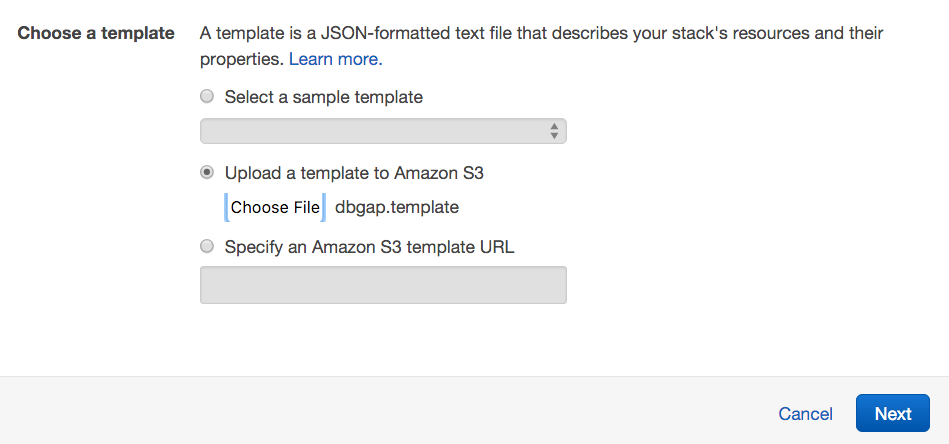 - On the next screen:
- Next to Stack name, write "dbgap".
- Next to Parameters, let the user type the name of a secure bucket into which they will write all of Rail-RNA's output. The bucket name should not have been taken by any other S3 user.
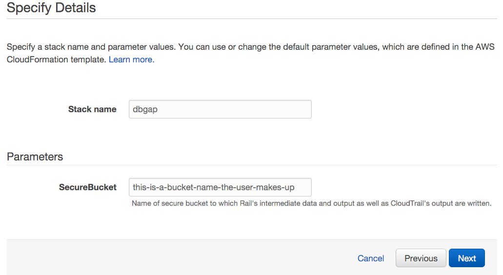
- Click Next and Next again, then click Create and wait for the stack creation to complete. The status message "CREATE_COMPLETE" will soon appear next to "dbgap" on the list of stacks.
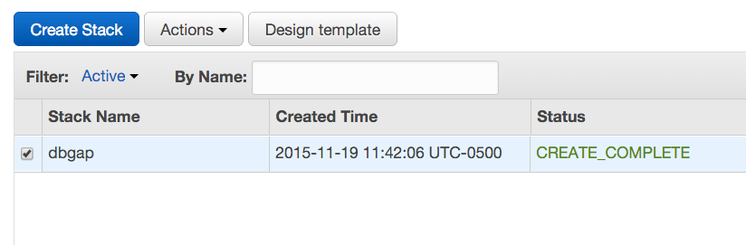
The best defense is a good offense, and you are encouraged to monitor traffic to clusters launched by the user. You may want to explore turning on VPC flow logs and CloudWatch alarms for suspicious activity.
Delegate Elastic MapReduce and CloudFormation authorites to the new IAM user (administrator)
The new IAM user still needs sufficient privileges to run Rail-RNA on Elastic MapReduce.
- Return to the AWS Console, again click Identity and Access Management, but now click Policies on the left sidebar.
-
Click Create Policy, then select Create Your Own Policy. (You may need to click Get Started first.)
- Under Policy Name, enter "UseExistingEMRRoles".
-
Under Policy Document, paste the following.
{ "Version": "2012-10-17", "Statement": [ { "Effect": "Allow", "Action": [ "iam:GetInstanceProfile", "iam:GetRole", "iam:PassRole" ], "Resource": "*" } ] } -
Click Create Policy.
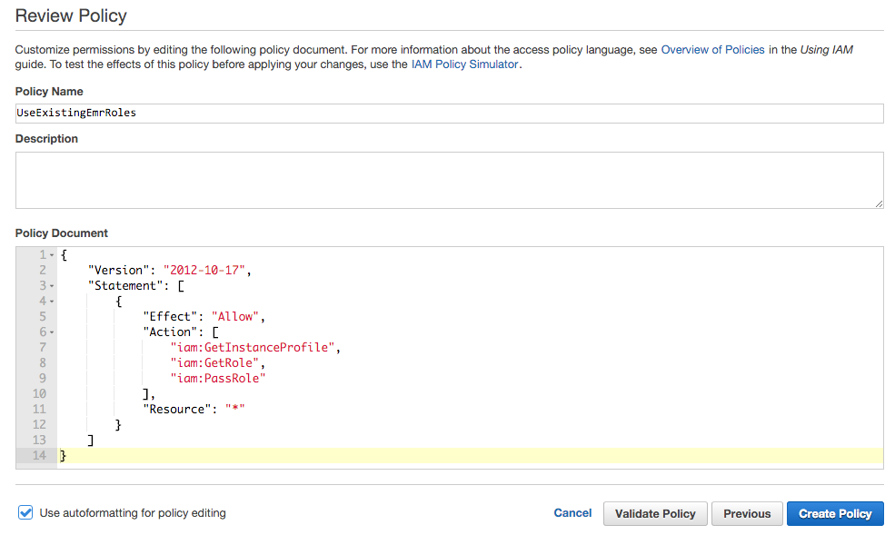 - Now click Users in the left pane, select the new IAM user, and click the Permissions tab.
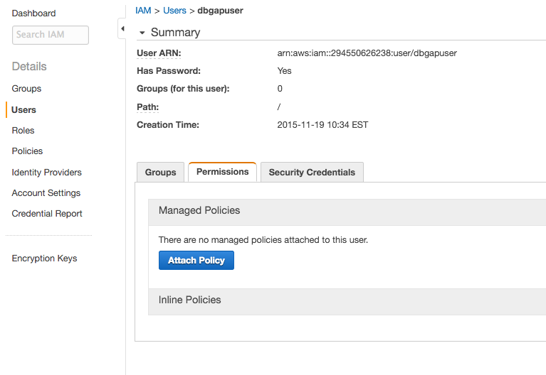
- Click Attach Policy, and select the
AWSCloudFormationReadOnlyAccess,AmazonElasticMapReduceFullAccess, andUseExistingEMRRolespolicies. Then click Attach Policy.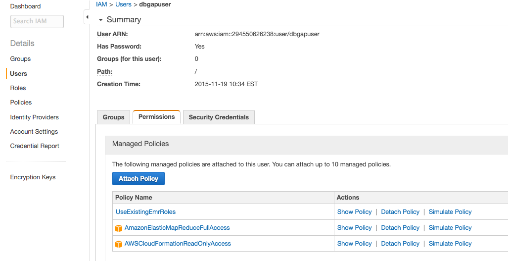Different policies including only some of the permissions from these may be included, but note that the user must be able to:- launch Elastic MapReduce clusters into the VPC from the secure dbGaP CloudFormation stack created by the administrator above, and
- read and write to the secure S3 bucket created by the administrator on behalf of the user.
Set up default EMR roles (administrator & user)
- Administrator: follow these instructions to create default roles for Elastic MapReduce.
- User: run
aws emr create-default-roles --profile dbgapto retrieve the default Elastic MapReduce roles created by the administrator.
Test the configuration (user)
dbGaP support has kindly provided a dataset composed of public RNA-seq samples from 1000 Genomes exclusively for testing secure cloud-based pipelines. Its project accession number on SRA is SRP041052. The user may test their configuration on the lymphoblastoid cell line sample SRR1219818 from that project by following these instructions.
- Download the dbGaP repository key for the test data. The key is referenced as
/path/to/prj_phs710EA_test.ngchere. - Run
rail-rna go local -a hg38 -o s3://this-is-a-bucket-name-the-user-names-up/dbgaptest -c 1 -m https://raw.githubusercontent.com/nellore/rail/master/ex/secure.manifest --secure-stack-name dbgap --profile dbgap --dbgap-key /path/to/prj_phs710EA_test.ngc
to submit a secure job flow into the public subnet of the VPC created above that preprocesses and aligns the test sample. Use the EMR interface to monitor the progress of the job flow, and check the bucket s3://this-is-a-bucket-name-the-user-names-up/dbgaptest for results after it's done.
Analyze dbGaP-protected data
The user may now submit Rail-RNA jobs that analyze dbGaP-protected data from their computer. A line in a manifest file (as described in the tutorial and reference) corresponding to a dbGaP-protected sample has the following format.
dbgap:<SRA run accession number>(tab)0(tab)<sample label>
where a run accession number from SRA begins with SRR, ERR, or DRR. An example manifest file is the test manifest file used in the previous section. Every Rail-RNA command analyzing dbGaP data should include the command-line parameters --secure-stack-name dbgap --profile dbgap --dbgap-key [the key file with the NGC extension you download] and should write to the secure bucket created by the administrator. An example command follows.
rail-rna go elastic
-m dbgap.manifest
-a hg38
-o s3://this-is-a-bucket-name-the-user-makes-up/dbgapout
-c 1
--secure-stack-name dbgap
--profile dbgap
--dbgap-key /path/to/some_dbgap_key.ngc
Rail-RNA does not currently support analyzing TCGA data.
Helpful notes for administrators
As for any new AWS account, you should consider how you would like to configure billing. Consolidated billing can be convenient if you are managing multiple AWS accounts simultaneously.
Further, you should consider raising your EC2 instance limits. This is particularly important if you plan to analyze large datasets (more than 100 RNA-seq samples at a time). To raise your limits, visit this page.